<div class = "titleslide"> <h3 class = "title-header" style = "top: 20%;"> BSc Umweltingenieurwesen<br> Angewandte Geoinformatik | HS21 </h3> <h1 class = "title-header" style = "top: 40%;">Coding in GIS I</h1> <div class = "title-header title-bottom" style = "width: 20%"> <img src="img/zhaw_rgb_byline_d.png" width = 100%> </div> <div class = "title-header title-bottom" style = "left: 40%; width: 47%;"> Nils Ratnaweera<br> Forschungsgruppe Geoinformatik<br> <br> Institut für Umwelt und Natürliche Ressourcen <br> ZHAW Zürcher Hochschule für Angewandte Wissenschaften<br> Grüental, Postfach, CH-8820 Wädenswil<br> <br> rata@zhaw.ch </div> <!-- {% include header.html %} --> --- # Vorstellung <img src="img/AGI_HS20_02_Coding_in_GIS_Ia0_1.png" width = 75%> --- name: zeitplan # Zeitplan .pure-table.pure-table-striped.smaller-font[ | Uhrzeit | Dauer | Thema | |---------------|---------|-----------------------------------------------------| | 13.00 – 13.30 | 30 | **Einführung Coding in GIS** | | 13.30 – 13.45 | 15 | Einführung in die heutigen Übungen | | 13.45 – 13.50 | 5 | Pause | | 13.50 – 14.00 | 10 | Demo | | 14.00 – 14.35 | 35 | Lösen Aufgabe 1 («Primitive Datentypen») | | 14.35 – 14.50 | 15 | Pause | | 14.50 – 15.00 | 10 | Besprechung Aufgabe 1 / Lösungen aufschalten | | 15.00 – 15.35 | 35 | Lösen Aufgabe 2 («Listen») | | 15.35 – 15.50 | 15 | Pause | | 15.50 – 16.00 | 10 | Besprechung Aufgabe 2 / Lösungen aufschalten | | 16.00 – 16.25 | 25 | Lösen Aufgabe 3 («Dictionaries») | | 16.25 – 16.35 | 10 | Zusammenfassung + Abschluss / Lösungen aufschalten | | Zuhause | 30 - 45 | Lösen bis und mit Aufgabe 4 («Tabellarische Daten») | ] --- # Lernziele * Sie sind in der Lage die Vorteile von Coden / Skripten versus «Point-and-Klick» zu erläutern -- * Sie kennen die Programmiersprachen für Einsteiger im Kontext von GIS undDataSciencerelevant sind -- * Sie kennen die erste grosse Einstiegshürde -- * Sie haben Lust Programmieren zu lernen --- name: themen layout: true # Themen <ul> <li id = "first">Programmieren: Eine notwendige Expertise?</li> <li id = "second">Sieben Gründe, warum ich Programmieren liebe ♥</li> <li id = "third">Die Qual der Wahl</li> <li id = "fourth">Die erste grosse Hürde: Programmierumgebung</li> </ul> --- template: themen class: first --- layout: true # Programmieren: Eine notwendige Expertise? --- background-image: url(img/AGI_HS20_02_Coding_in_GIS_Ia2.jpg) Quelle: https://www.androidauthority.com/why-everyone-should-learn-to-code-663860/ --- <div class = "center middle"> <iframe width="560" height="315" src="https://www.youtube.com/embed/MwLXrN0Yguk?start=33" title="YouTube video player" frameborder="0" allow="accelerometer; autoplay; clipboard-write; encrypted-media; gyroscope; picture-in-picture" allowfullscreen></iframe> </div> .footnote[.smaller-font[Quelle: https://youtu.be/MwLXrN0Yguk]] ??? * “every Student needs to learn to code” * “coding is the 21 century writing” * “programming is the new literacy” --- class: center, middle .footnote[.smaller-font[Quelle: https://www.rheinwerk-verlag.de/programmieren-lernen-mit-der-maus_4973]] --- <div class = "center middle"> 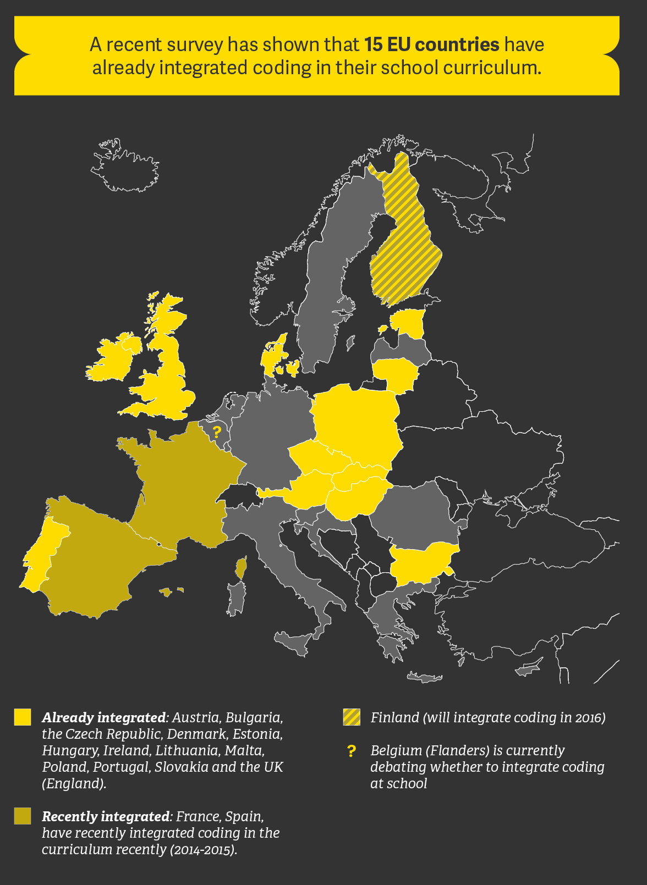 </div> .footnote[.smaller-font[Quelle: https://www.euractiv.com/section/digital/infographic/infographic-coding-at-school-how-do-eu-countries-compare/]] ??? - In Australia, the government has been investing in STEM initiatives in recent years, and coding classes will soon be mandatory in Queensland schools - Meanwhile in the UK, kids aged five and over have been learning the fundamentals of coding since 2014. --- <div class = "center middle"> 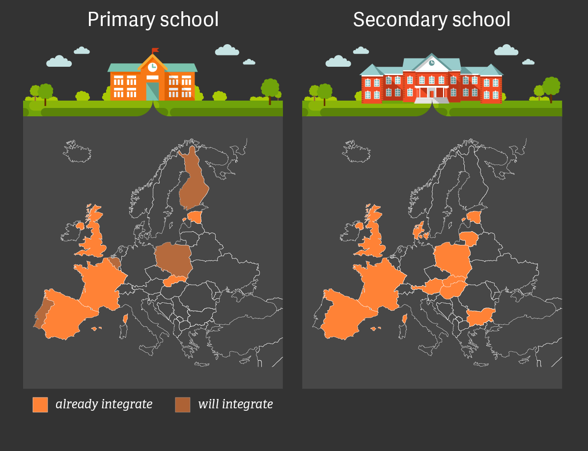 </div> .footnote[.smaller-font[Quelle: https://www.euractiv.com/section/digital/infographic/infographic-coding-at-school-how-do-eu-countries-compare/]] --- layout: false template: themen class: second <img src="img/AGI_HS20_02_Coding_in_GIS_Ia6.jpg" width = 100%> --- layout: true # Sieben Gründe, warum ich Programmieren liebe ♥ --- 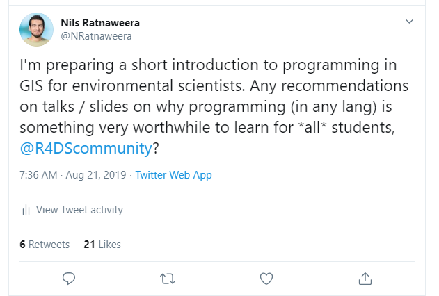 --- <img src="img/AGI_HS20_02_Coding_in_GIS_Ia8.png" height = 200, class = "center"> --- Ich ♥ Programmieren, weil ich damit: * … repetitive Tasks automatisieren kann * … übertragbare «Tools» bauen kann * … mehr Flexibilität und «Power» habe * … zu Grunde liegende Funktionen besser verstehe * … bessere Möglichkeiten habe zu Kollaborieren * … bessere Möglichkeiten habe, Hilfe zu erhalten * … reproduzierbar arbeite --- layout: true ## Automatisierung von repetitiven Tasks --- <div class = "center"> 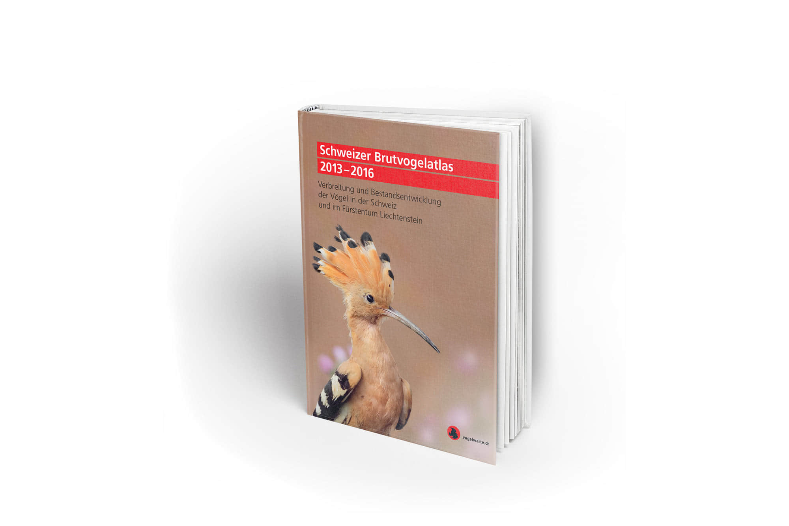 </div> .footnote[.smaller-font[Quelle: [www.vogelwarte.ch](https://www.vogelwarte.ch/assets/files/projekte/entwicklung/zustandsbericht%202018/Zustand%20der%20Vogelwelt%20in%20der%20Schweiz_Bericht%202018_D_low.pdf)]] ??? 249 Arten! --- <img src="img/AGI_HS20_02_Coding_in_GIS_Ia9_1.jpg" height = 400, class = "center"> --- <img src="img/AGI_HS20_02_Coding_in_GIS_Ia9_2.jpg" height = 400, class = "center"> --- <img src="img/AGI_HS20_02_Coding_in_GIS_Ia9_3.jpg" height = 400, class = "center"> --- 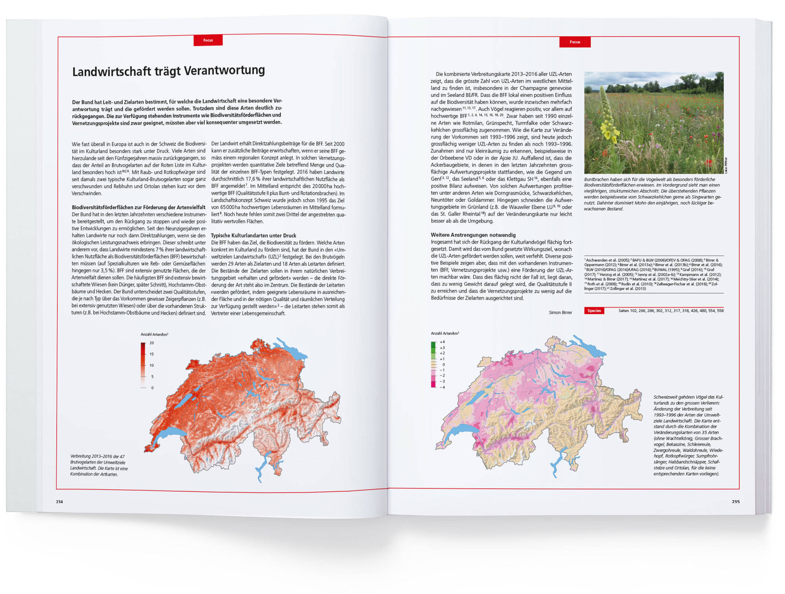 --- 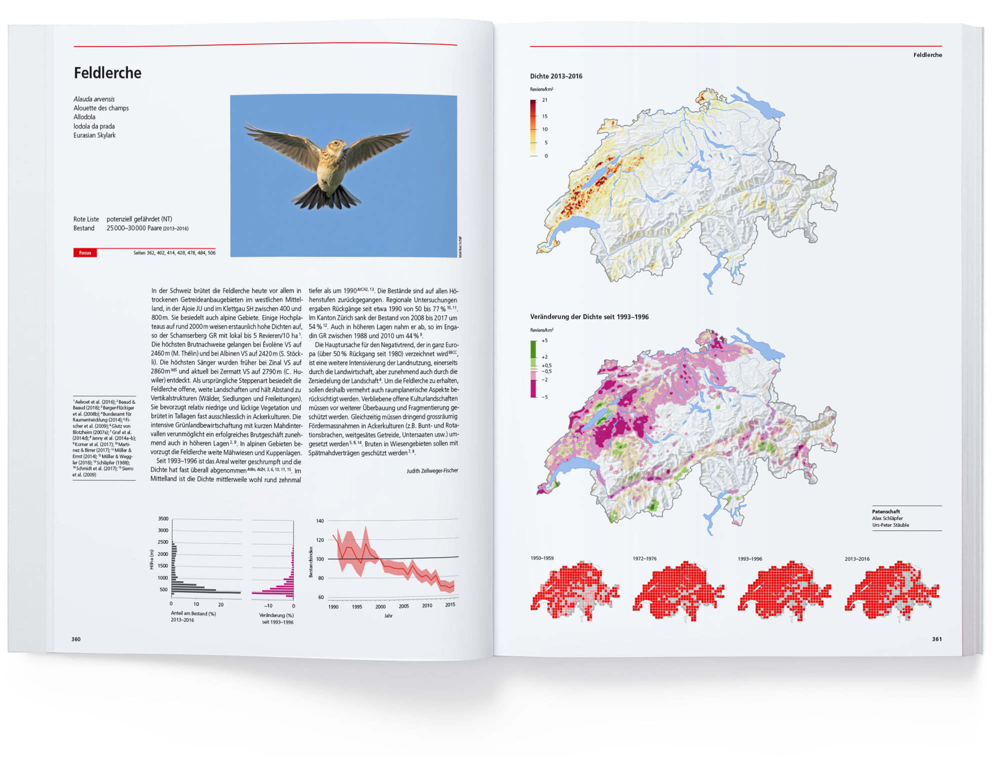 --- <div class = "center"> <img src="img/AGI_HS20_02_Coding_in_GIS_Ia10.png" width="75%"> </div> --- ```python make_map(neuntoeter) ``` <img src="img/AGI_HS20_02_Coding_in_GIS_Ia10.png" width = 50%> --- ```python all_birds = [ringdrossel, turmfalke …] for bird in all_birds: make_map(bird) ``` .invisible-ink[Neutöter, Ringdrossel, Turmfalke, Mittelspecht, Turteltaube, Rauchschwalbe] <img src="img/AGI_HS20_02_Coding_in_GIS_Ia10.png" width = 30%> -- <img src="img/AGI_HS20_02_Coding_in_GIS_Ia11.png" width = 30%> -- 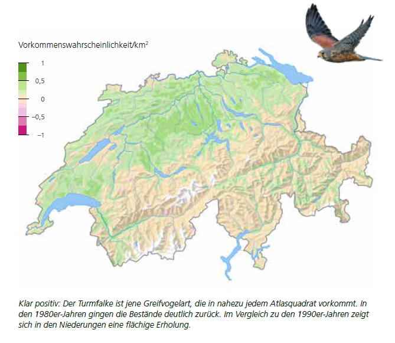 -- 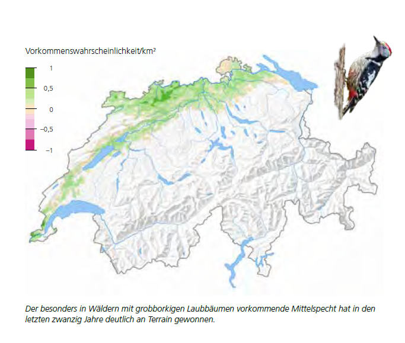 -- <img src="img/AGI_HS20_02_Coding_in_GIS_Ia15.png" width = 30%> -- <img src="img/AGI_HS20_02_Coding_in_GIS_Ia16.png" width = 30%> ??? --- Achtung: Automatisierung * ... ist v.a. bei identischen, sehr häufig ausgeführten Tasks relevant * ... bei vielen Tasks wird dieser erhoffte Vorteil überschätzt --  --  .footnote[.smaller-fontsize[Quelle: https://xkcd.com/1319/]] --- layout: true ## Übertragbarkeit von erarbeiteten Lösungen --- -- .pull-left[ <img src="img/AGI_HS20_02_Coding_in_GIS_Ia21.jpg" width = 45%> ] -- .pull-right[ <img src="img/AGI_HS20_02_Coding_in_GIS_Ia19.gif" width = 75%> ] ??? Alte Lösungen können für neue Probleme umfunktioniert werden - Der erste Sparschäler mit querliegender beweglicher Klinge ist das Modell „Rex“, das von Alfred Neweczerzal 1947 erfunden und im selben Jahr patentiert wurde.[3] - Alfred Neweczerzal (1899–1959)[4] war im schweizerischen Davos geboren. https://de.wikipedia.org/wiki/Sparsch%C3%A4ler --- .pull-left[ <img src="img/AGI_HS20_02_Coding_in_GIS_Ia10.png" width = 30%> <img src="img/AGI_HS20_02_Coding_in_GIS_Ia11.png" width = 30%> <img src="img/AGI_HS20_02_Coding_in_GIS_Ia15.png" width = 30%> <img src="img/AGI_HS20_02_Coding_in_GIS_Ia16.png" width = 30%> ] -- .pull-right[ 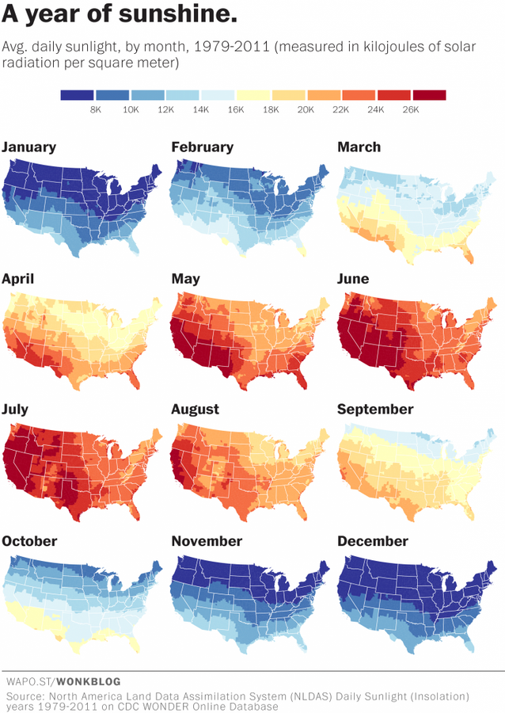 ] --- layout: true ## Flexiblität/ Power ---  .foonote[.smaller-textsize[Quelle: [www.washingtonpost.com](https://www.washingtonpost.com/news/wonk/wp/2015/07/13/map-where-americas-sunniest-and-least-sunny-places-are/)]] ??? In einem GUI ist man an die Optionen limitiert, die einem durch das Grafische Interface angeboten werden Mit Beherrschung der zu Grunde liegenden Programmiersprache kann man auf eine viel grössere Anzahl von Funktionalitäten zurückgreifen. --- Beispiel: Zufällige Punkte in einem Umkreis verteilen .pull-left[ <figure> 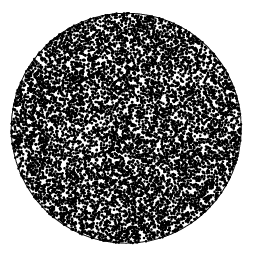 <figcaption>ArcGIS "Random Points in Polygon"</figcaption> </figure> ] .pull-right[ <figure> 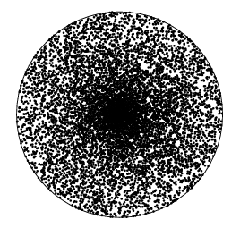 <figcaption>Python / R (eigene Funktion)</figcaption> </figure> ] --- layout: false ## Verständnis der zu Grunde liegenden Funktionen .pull-left[ <figure> <img src="img/AGI_HS20_02_Coding_in_GIS_Ia33.jpg" style="width:100%"> <figcaption>ArcGIS: "TopologyRules" (seitenlang und ArcGIS spezifisch)</figcaption> </figure> ] .pull-right[ <figure> 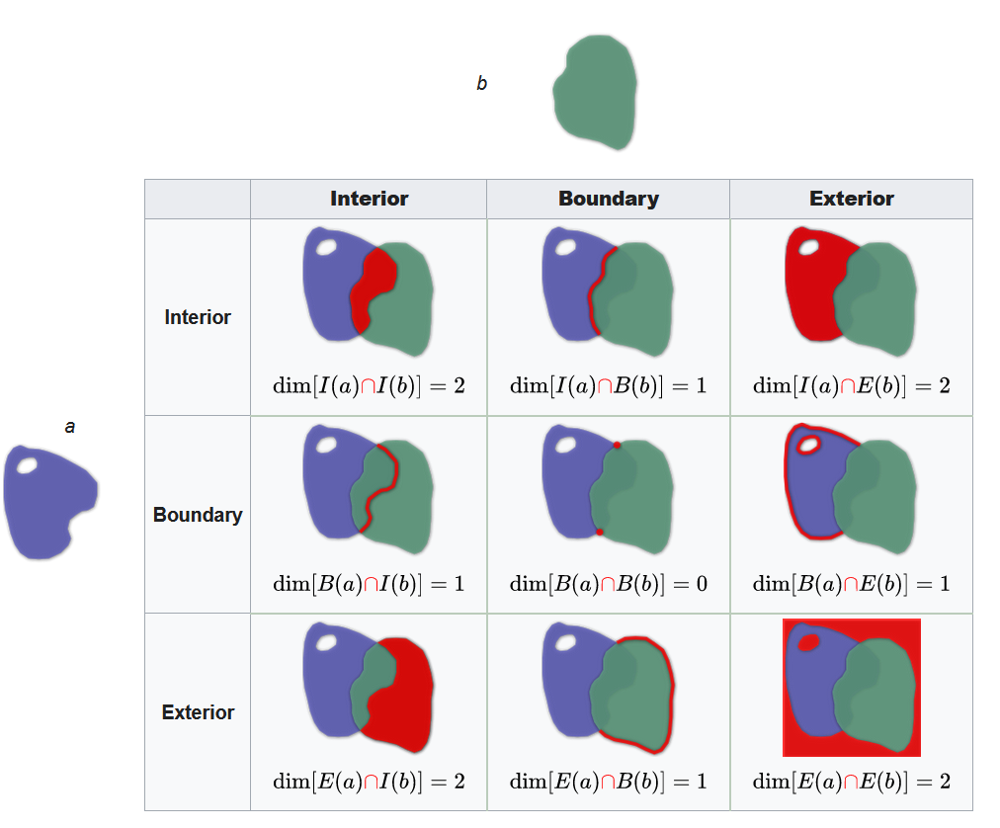 <figcaption>Grundkonzept DE-9IM: (kurz und elegant, in allen Programmiersprachen gleich)</figcaption> </figure> ] --- layout: true ## Kollaborationsmöglichkeit --- * Programmieren basiert auf einfachen Textfiles * Dies ermöglicht ein _hohes Grad_ an Kollaboration * So können gigantische OpenSource Projekte mit tausenden von Beiträgern realisiert werden * GUIs basieren auf komplexen, unzugänglichen Dateien (z.B. xlsx,docx, mxd, aprx) * Versionierung/ Kollaboration ist schwierig bis unmöglich --- 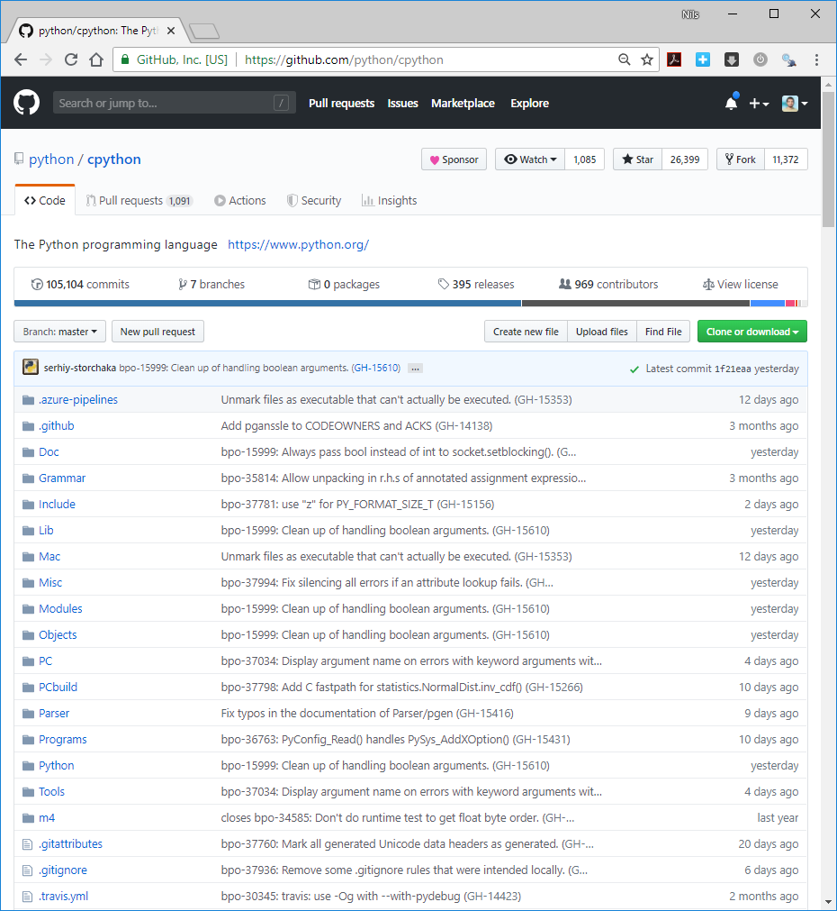 --- 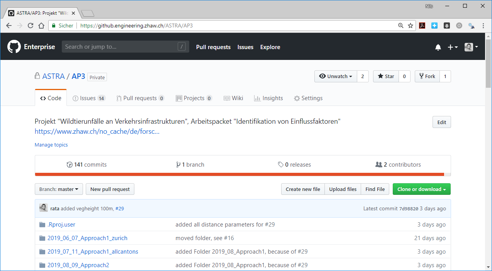 --- <img src="img/AGI_HS20_02_Coding_in_GIS_Ia37.png" style="width:75%"> --- layout: true ## Möglichkeiten Hilfestellungen zu bekommen --- * Jedes Problem / jede Frage kann auf ein paar wenige Zeilen Code reduziert werden («Minimalworkingexample») * So werden z.B. aufStackoverflow \> 5’000 Fragen _pro Tag_ gestellt<sup>1</sup>, > 90% der Fragen werden beantwortet<sup>2</sup> und es dauert ca. 10 Minuten eine Antwort zu bekommen<sup>2</sup> .footnote[.smaller-textsize[1)[meta.stackexchange.com](https://meta.stackexchange.com/a/146414/404870) <br> 2)[people.eecs.berkeley.edu](https://people.eecs.berkeley.edu/~bjoern/projects/stackoverflow/)]] --- <div class = "center"> 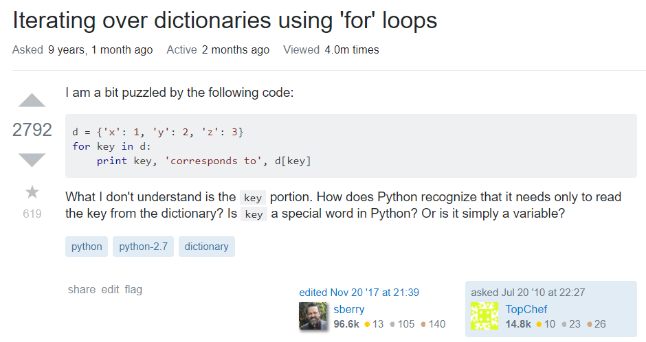 </div> --- <div class = "center"> 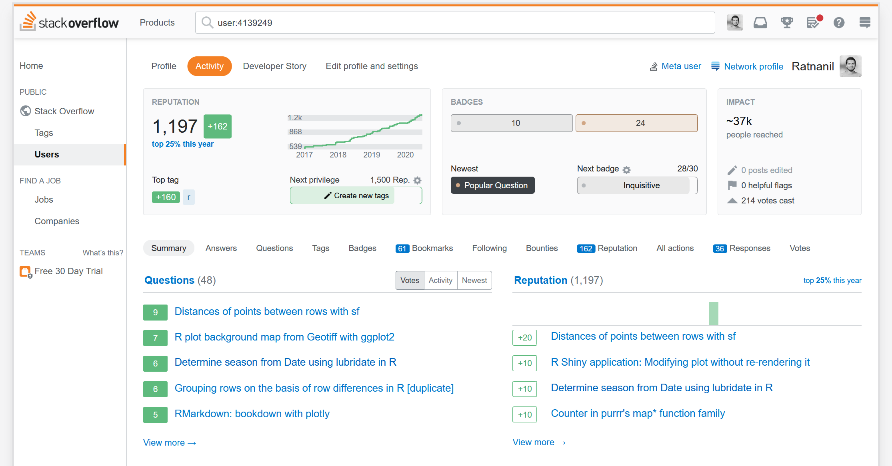 </div> --- --- layout: false ## Reproduzierbarkeit ist... * ... v.a. in der Wissenschaft von grosser Wichtigkeit (siehe "[Reproducibility Crisis](https://en.wikipedia.org/wiki/Replication_crisis)") * ... auch in der Privatwirtschaft wichtig * ... bei GUI-Anwendungen kaum gegeben --- template: themen class: third --- layout: true # Die Qual der Wahl --- <div style="background-image: url('img/AGI_HS20_02_Coding_in_GIS_Ia41.jpg'); height: 400px; width: 100%; position: relative;"> <!-- <img src="img/AGI_HS20_02_Coding_in_GIS_Ia41.jpg" style="width:100%; position: relative;"> --> <img src="img/AGI_HS20_02_Coding_in_GIS_Ia40.png" style="position: absolute; top: 160px; left: 050px;width: 40px;"> <img src="img/AGI_HS20_02_Coding_in_GIS_Ia42.png" style="position: absolute; top: 160px; left: 170px;width: 40px;"> <img src="img/AGI_HS20_02_Coding_in_GIS_Ia43.png" style="position: absolute; top: 160px; left: 280px;width: 40px;"> <img src="img/AGI_HS20_02_Coding_in_GIS_Ia44.png" style="position: absolute; top: 160px; left: 400px;width: 40px;"> <img src="img/AGI_HS20_02_Coding_in_GIS_Ia46.png" style="position: absolute; top: 160px; left: 630px;width: 40px;"> </div> .footnote[.smaller-textsize[Quelle: [http://createlucklv.com](http://createlucklv.com/real-estate/sacrifices-vs-choices-knowing-the-difference-and-choosing-choice/)]] --- --- <img src="img/tiobe_2.png" width = 100%> ??? Programmiersprache C --- 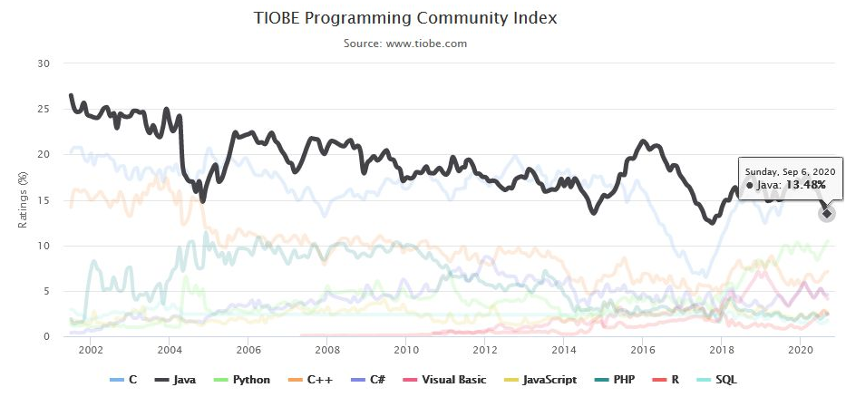 ??? Programmiersprache Java --- 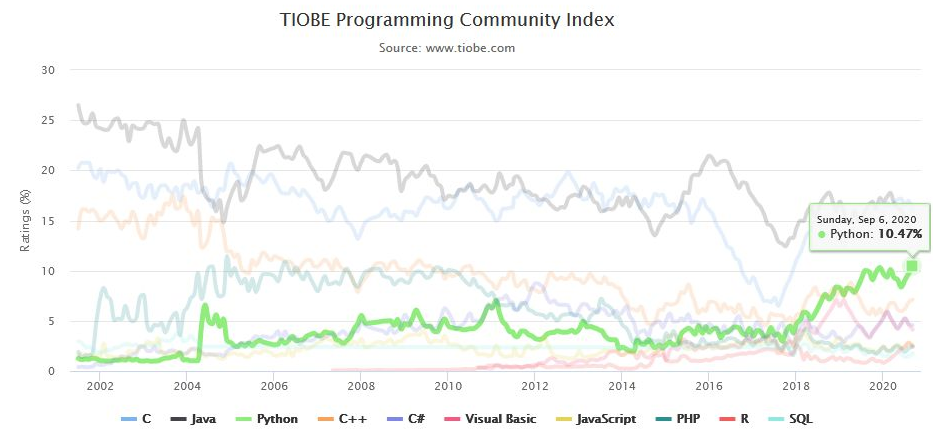 ??? Programmiersprache Python --- 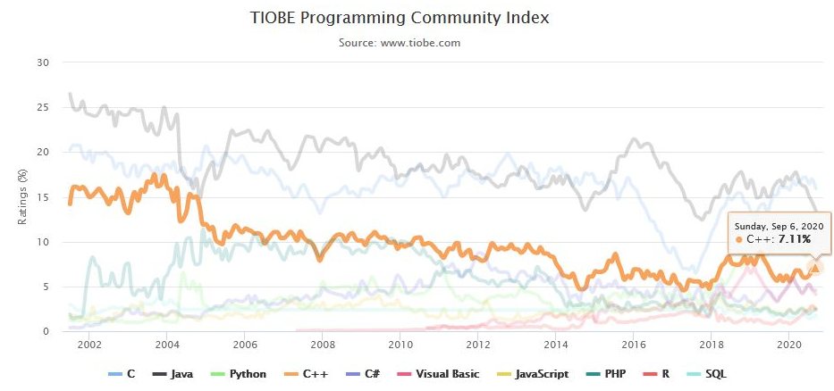 ??? Programmiersprache C++ --- <img src="img/tiobe_6.png" width = 100%> ??? Programmiersprache C# --- <img src="img/tiobe_7.png" width = 100%> ??? Programmiersprache Visual Basic --- 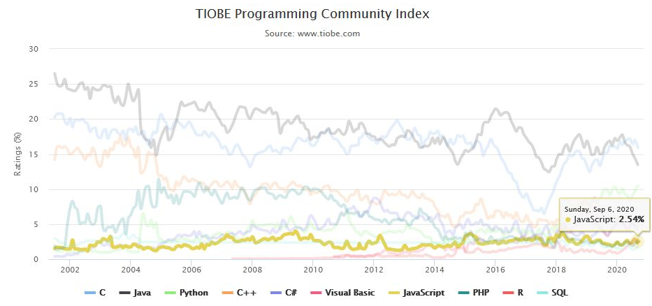 ??? Programmiersprache JavaScript --- 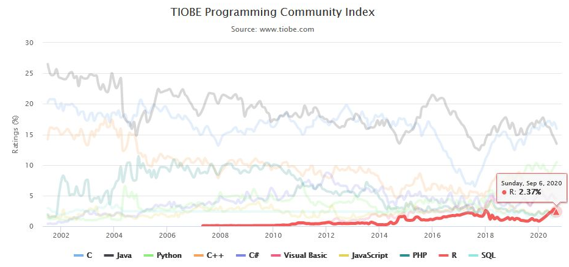 ??? Programmiersprache R --- 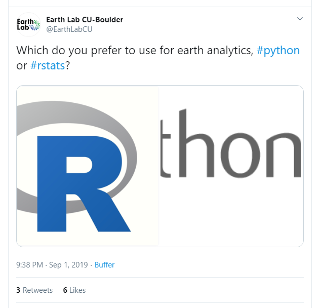 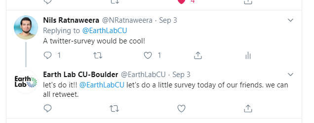 --- 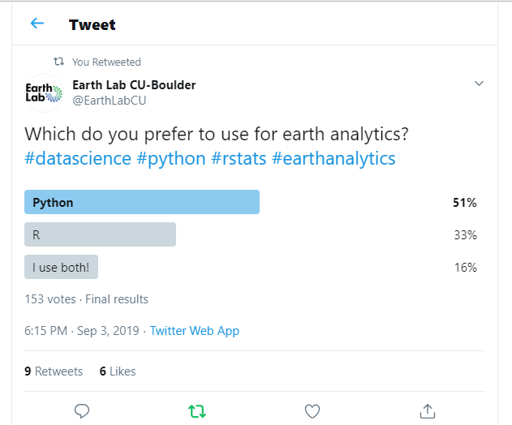 <!--  --> <!-- Mathematik für UI 2 Mathematik für UI 1 --> --- template: themen class: fourth <!-- <style> li.fourth {color: red;} </style> --> --- layout: true # Die erste grosse Hürde: Programmierumgebung --- * Welche Python Version? * Welche Entwicklungsumgebung («IDE»)? * Welche Module? * Welcher Package Manager? ??? Der schwierigste Schritt für Anfänger in Python ist meiner Meinung nach das Einrichten der Programmierumgebung. --- <div style="background-image: url('img/AGI_HS20_02_Coding_in_GIS_Ia56.jpg'); background-repeat: no-repeat; background-size: 90%; height: 1000px; position: relative;"> </div> .footnote[.smaller-textsize[Quelle: [canadianliving.com](https://www.canadianliving.com/health/mind-and-spirit/article/6-reasons-you-should-make-time-to-relax-and-recharge )]] ---  --- <img src = "img/AGI_HS20_02_Coding_in_GIS_Ia66.png" width="100%"> <!-- <div style = "background-image: url('img/AGI_HS20_02_Coding_in_GIS_Ia61b.jpg'); background-repeat: no-repeat; border-radius: 100%; height: 250px; width: 250px; position: relative;"></div> --> <!--       --> --- layout: true ## Showcases ---  .footnote[.smaller-textsize[Quelle: [tucsonweekly.com](https://www.tucsonweekly.com/TheRange/archives/2016/02/11/weve-got-gravitational-waves)]] ??? Erstes Beispiel: Am 14. September 2015 hat der Gravitationswellendetektor LIGO die erste Graviationswelle aus der verschmelzung zweier schwarzer Löcher detekteirt. --- .pull-left[ 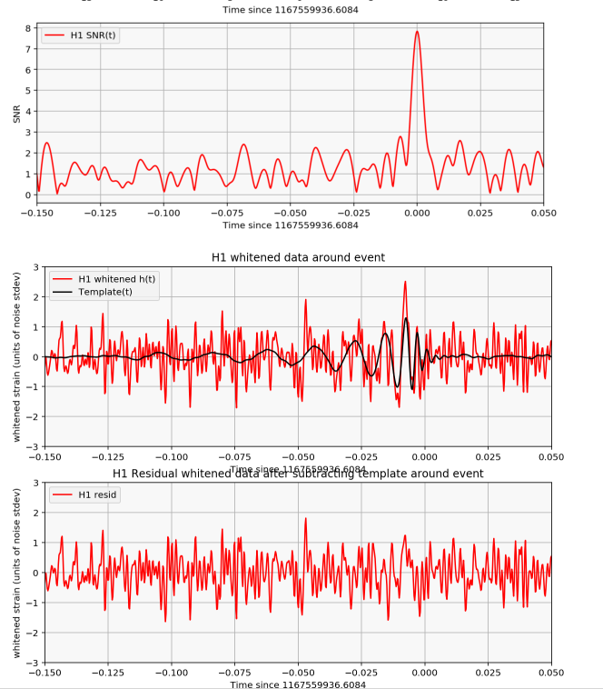 ] .pull-right[ <img src = "img/AGI_HS20_02_Coding_in_GIS_Ia66.png" width="100%"> ] .footnote[Code auf [Github](https://github.com/minrk/ligo-binder) verfübar] ??? Auch hier wurde Python mit Matplotlib genutzt und nicht nur das: die Datenanalyse wurde innerhalb eines Jupyter Notebooks festgehalten. Mit Anacona habt ihr nun Jupyter Notebooks ebenfalls installiert und könntet nun die Daten ruterladen und bei euch lokal ausführen. --- <div class = "center"> <img src = "img/AGI_HS20_02_Coding_in_GIS_Ia67.jpg" width="70%"> </div> ??? Am 10.4.2019 wurde das erste Bild von einem schwarzen Loch, generiert durch das Event Horzon Teleskop (EHT) vorgestelllt. --- <div style="background-image: url('img/AGI_HS20_02_Coding_in_GIS_Ia70.png'); background-repeat: no-repeat; background-size: 100%; height: 400px; width: 80%; position: relative;"> </div> ??? Dabei kursierte ebenfalls dieses Bild von Katie Bourman, eine der Wissenschaftlerinnen des EHT-Teams im internet. Was man hier auf ihrem Bildschirm sieht ist offensichtlich die eben erstellte Visualisierung des schwarzen Loches – erstellt mit Matplotlib, wie an den Achsen zu erkennen ist. Der Code ist übrigens öffentlich einsehbar --- <div style="background-image: url('img/AGI_HS20_02_Coding_in_GIS_Ia70.png'); background-repeat: no-repeat; background-size: 100%; height: 400px; width: 80%; position: relative;"> <img src = "img/AGI_HS20_02_Coding_in_GIS_Ia68.png" style="position: absolute; top: 200px; left: 100px;width: 400px;"> </div> --- <div style="background-image: url('img/AGI_HS20_02_Coding_in_GIS_Ia70.png'); background-repeat: no-repeat; background-size: 100%; height: 400px; width: 80%; position: relative;"> <img src = "img/AGI_HS20_02_Coding_in_GIS_Ia68.png" style="position: absolute; top: 200px; left: 100px; width: 400px;"> <img src = "img/AGI_HS20_02_Coding_in_GIS_Ia66.png" style="position: absolute; top: 000px; left: 630px; width: 200px;"> </div> .footnote[Code auf [Github](https://github.com/achael/eht-imaging) verfübar] --- layout: true ## Programmierumgebung --- Diese Tools: * gelten als «bestpractice» und «state of the art» * sind alle «Free and Open Source» * werden aktiv weiter entwickelt * werden von einer __grossen__ Community genutzt und unterstützt (stackoverflow/github) Was heisst das für euch? * Wir verlassen die ESRI / ArcGIS Welt * Wir lernen eine neue IDE kennen (JupyterLab) * Wir lernen einen «packagemanager» kennen (Conda) --- Anzahl Fragen aufStackoverflowzum jeweiligen Thema <img src="img/so_tags.jpg" width=100%> .footnote[Quelle: stackoverflow.com | Abgerufen am 22.09.2020 | jeder Begriff wurde als «Tag» gesucht, mehrere Tags wurden mit «or» verbunden] --- # noch ein wichtiger Tipp von einem Grossmeister  --- <iframe width="560" height="315" src="https://www.youtube.com/embed/vYwXMnC03I4?start=44" title="YouTube video player" frameborder="0" allow="accelerometer; autoplay; clipboard-write; encrypted-media; gyroscope; picture-in-picture" allowfullscreen></iframe> --- # Zusammenfassung * CodingLiteracy: Programmieren wird für alle immer wichtiger * Ein Programmieransatz hat gegenüber den GUI Ansatz viele Vorteile * Automatisierung von repetitiven Tasks * Übertragbarkeit von erarbeiteten Lösungen * Flexibilität / Power * Besseres Verständnis der zu Grunde legenden Funktionen * Kollaborationsmöglichkeit * Möglichkeiten Hilfestellungen zu bekommen * Reproduzierbarkeit * R und Python sind eine gute Wahl für * Einsteiger * Arbeiten im Bereich GIS /DataScience * Die Einrichtung der Programmierumgebung ist die erste grosse Hürde --- template: zeitplantiobe_1.png" width = 100%> ??? Tiobe: Ranking von Programmiersprachen nach ihrer Popularität. Der Listenplatz jeder Sprache ergibt sich aus der Häufigkeit von Treffern bei einer Suche nach dem Namen der Programmiersprache in den, gemäß Alexa Internet, wichtigsten Internetseiten mit Suchfunktion.[ --- <img src="img/tiobe_2.png" width = 100%> ??? Programmiersprache C --- ??? Programmiersprache Java --- ??? Programmiersprache Python --- ??? Programmiersprache C++ --- <img src="img/tiobe_6.png" width = 100%> ??? Programmiersprache C# --- <img src="img/tiobe_7.png" width = 100%> ??? Programmiersprache Visual Basic --- ??? Programmiersprache JavaScript --- ??? Programmiersprache R --- --- <!--  --> <!-- Mathematik für UI 2 Mathematik für UI 1 --> --- template: themen class: fourth <!-- <style> li.fourth {color: red;} </style> --> --- layout: true # Die erste grosse Hürde: Programmierumgebung --- * Welche Python Version? * Welche Entwicklungsumgebung («IDE»)? * Welche Module? * Welcher Package Manager? ??? Der schwierigste Schritt für Anfänger in Python ist meiner Meinung nach das Einrichten der Programmierumgebung. --- <div style="background-image: url('img/AGI_HS20_02_Coding_in_GIS_Ia56.jpg'); background-repeat: no-repeat; background-size: 90%; height: 1000px; position: relative;"> </div> .footnote[.smaller-textsize[Quelle: [canadianliving.com](https://www.canadianliving.com/health/mind-and-spirit/article/6-reasons-you-should-make-time-to-relax-and-recharge )]] ---  --- <img src = "img/AGI_HS20_02_Coding_in_GIS_Ia66.png" width="100%"> <!-- <div style = "background-image: url('img/AGI_HS20_02_Coding_in_GIS_Ia61b.jpg'); background-repeat: no-repeat; border-radius: 100%; height: 250px; width: 250px; position: relative;"></div> --> <!--       --> --- layout: true ## Showcases ---  .footnote[.smaller-textsize[Quelle: [tucsonweekly.com](https://www.tucsonweekly.com/TheRange/archives/2016/02/11/weve-got-gravitational-waves)]] ??? Erstes Beispiel: Am 14. September 2015 hat der Gravitationswellendetektor LIGO die erste Graviationswelle aus der verschmelzung zweier schwarzer Löcher detekteirt. --- .pull-left[ ] .pull-right[ <img src = "img/AGI_HS20_02_Coding_in_GIS_Ia66.png" width="100%"> ] .footnote[Code auf [Github](https://github.com/minrk/ligo-binder) verfübar] ??? Auch hier wurde Python mit Matplotlib genutzt und nicht nur das: die Datenanalyse wurde innerhalb eines Jupyter Notebooks festgehalten. Mit Anacona habt ihr nun Jupyter Notebooks ebenfalls installiert und könntet nun die Daten ruterladen und bei euch lokal ausführen. --- <div class = "center"> <img src = "img/AGI_HS20_02_Coding_in_GIS_Ia67.jpg" width="70%"> </div> ??? Am 10.4.2019 wurde das erste Bild von einem schwarzen Loch, generiert durch das Event Horzon Teleskop (EHT) vorgestelllt. --- <div style="background-image: url('img/AGI_HS20_02_Coding_in_GIS_Ia70.png'); background-repeat: no-repeat; background-size: 100%; height: 400px; width: 80%; position: relative;"> </div> ??? Dabei kursierte ebenfalls dieses Bild von Katie Bourman, eine der Wissenschaftlerinnen des EHT-Teams im internet. Was man hier auf ihrem Bildschirm sieht ist offensichtlich die eben erstellte Visualisierung des schwarzen Loches – erstellt mit Matplotlib, wie an den Achsen zu erkennen ist. Der Code ist übrigens öffentlich einsehbar --- <div style="background-image: url('img/AGI_HS20_02_Coding_in_GIS_Ia70.png'); background-repeat: no-repeat; background-size: 100%; height: 400px; width: 80%; position: relative;"> <img src = "img/AGI_HS20_02_Coding_in_GIS_Ia68.png" style="position: absolute; top: 200px; left: 100px;width: 400px;"> </div> --- <div style="background-image: url('img/AGI_HS20_02_Coding_in_GIS_Ia70.png'); background-repeat: no-repeat; background-size: 100%; height: 400px; width: 80%; position: relative;"> <img src = "img/AGI_HS20_02_Coding_in_GIS_Ia68.png" style="position: absolute; top: 200px; left: 100px; width: 400px;"> <img src = "img/AGI_HS20_02_Coding_in_GIS_Ia66.png" style="position: absolute; top: 000px; left: 630px; width: 200px;"> </div> .footnote[Code auf [Github](https://github.com/achael/eht-imaging) verfübar] --- layout: true ## Programmierumgebung --- Diese Tools: * gelten als «bestpractice» und «state of the art» * sind alle «Free and Open Source» * werden aktiv weiter entwickelt * werden von einer __grossen__ Community genutzt und unterstützt (stackoverflow/github) Was heisst das für euch? * Wir verlassen die ESRI / ArcGIS Welt * Wir lernen eine neue IDE kennen (JupyterLab) * Wir lernen einen «packagemanager» kennen (Conda) --- Anzahl Fragen aufStackoverflowzum jeweiligen Thema <img src="img/so_tags.jpg" width=100%> .footnote[Quelle: stackoverflow.com | Abgerufen am 22.09.2020 | jeder Begriff wurde als «Tag» gesucht, mehrere Tags wurden mit «or» verbunden] --- # noch ein wichtiger Tipp von einem Grossmeister  --- <iframe width="560" height="315" src="https://www.youtube.com/embed/vYwXMnC03I4?start=44" title="YouTube video player" frameborder="0" allow="accelerometer; autoplay; clipboard-write; encrypted-media; gyroscope; picture-in-picture" allowfullscreen></iframe> --- # Zusammenfassung * CodingLiteracy: Programmieren wird für alle immer wichtiger * Ein Programmieransatz hat gegenüber den GUI Ansatz viele Vorteile * Automatisierung von repetitiven Tasks * Übertragbarkeit von erarbeiteten Lösungen * Flexibilität / Power * Besseres Verständnis der zu Grunde legenden Funktionen * Kollaborationsmöglichkeit * Möglichkeiten Hilfestellungen zu bekommen * Reproduzierbarkeit * R und Python sind eine gute Wahl für * Einsteiger * Arbeiten im Bereich GIS /DataScience * Die Einrichtung der Programmierumgebung ist die erste grosse Hürde --- template: zeitplan